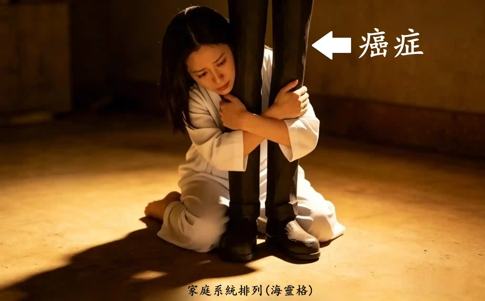

一次性全方位身心靈疗愈，無需套餐、無需多次多日疗程
(1) 先進行 1~2 小時 "电脑屏幕" 面对面 深度访谈：
了解你希望解開的困擾、心结、與疑惑
(2) 展開 1~2 小时 催眠 引導：(客戶躺在床上/沙發上)
進入潜意識状態，连接内在智慧，探尋问题根源與答案
(3) 回顾 & 总结： 整合收获，清晰后续方向
全程線上(微軟Teams/騰訊會議)視訊進行，無需線下奔波，
在熟悉的家中房間裡，享受專屬於你的定制身心靈療癒。
催眠狀態是 "專注 + 放鬆" 的特殊意識狀態 (不是睡著)
✔ 當你沉浸手機裏，身旁任何動靜，你全然聽不見的那種專注狀態
✔ 腦筋放空，不用主動用力，只需被動跟隨催眠師引導，更易鬆弛

在日常生活中，左脑 担任着 理性逻辑 & 质疑批评 的角色，并會随着 情绪起伏 而一直 波动不定；
而 右脑 所蕴含的 纯真直觉，一直被左脑的 過度理性 所壓制。
久而久之，你渐渐忽略了右脑的聲音，也遗失了内在的本真感知。
催眠的目的，正是引導你的 左脑 慢慢安静下来，卸下過度的分析防禦，讓 右脑 的智慧浮出表面，

每個人的内在，都有好幾個不同特質的部分：例如那個“工作狂”的你、“不想上進”的那個你、
“逞强倔强”的那個你、“淚點極低”的那個你。
量子催眠的目的，是去連結那個 擁有最高智慧的 那部分的自己 —— 與萬物合一的那個你。
這部分的你，就像一個記錄了你所有旅程的黑盒子。這個你，知曉所有一切。
Nikola Tesla 说，宇宙的一切都是 能量、频率、振動。

你的脑波、你的意图，都是能量频率信號；
你潜意識里的每一個念頭，
都會被身體的每一個细胞默默聆聼、如實回應。


小孩不想上学时，跟妈妈说發燒頭疼了，
他的體温就真的高起来了。

醫生開维他命给你，你以为是特效藥，
结果你的病好起来了。

你的身體是一個宇宙，而你，就是这個宇宙的神。
你身體的每個细胞都深爱着你，無條件地對你唯命是從。
有一位妻子，與丈夫早已形同陌路。
當她确诊癌症后，在心理咨询中发现了一個真相 — 她的潜意識里，其實不願這個病症消失。
因为只有在生病后，丈夫才會放下隔阂，送她去看醫生、说上寥寥数语，
这個久违的互動，成了她潜意識里不願放手的"温暖"。

而這份 "潜意識" 的想法，與她的 "意識" 完全相悖。
當被點破時，她的意識瞬间崩溃，
疯狂破口大骂："神经病啊！哪有人會不想康復的！！！！"
你知道 你潜意識里 真正的想法吗？
吸引力法則告訴大家，我們必須一直告訴自己 “我很有钱！我值得富有！金钱流向我！”，財富就會被吸引過來。
那為何他的財富沒有顯化出來呢？
吸引力法則、顯化法則，聽從的是潜意識的信念與情绪频率，而不是你頭腦刻意背诵的台词。
嘴上說富足，内心深處根本不認同。
潜意識牢牢鎖住 "我不配變得富足、不可能輕鬆就能有钱、有錢人很陰險、太多錢會出事" 的信念。
匮乏频率，只會持續吸引匮乏實相。
你是否也想破口大骂："哪有人會不想有錢的！！！！"
你潜意識里的哪些想法，卡住了你的人生？

一次性全方位身心靈疗愈，無需套餐、無需多次多日疗程
(1) 先進行 1~2 小時 "电脑屏幕" 面对面 深度访谈：
了解你希望解開的困擾、心结、與疑惑
(2) 展開 1~2 小时 催眠 引導：(客戶躺在床上/沙發上)
進入潜意識状態，连接内在智慧，探尋问题根源與答案
(3) 回顾 & 总结： 整合收获，清晰后续方向
針對某個心結的潛意識疏通（1小時）
(1) 15分鐘 面談
(2) 35分鐘 引導進入潛意識 (客戶坐在電腦前)
(3) 10分鐘 回顧總結
就像健身房教练與客户的關係：客户必须“願意”按照教练指引、主動完成训练。
教练要求做10下俯卧撑，客户就要認真投入、确實執行。
如果自身不願行動，就算教练再專業，也無法帮你達成健身目標。

同理，催眠师在引導個案时，也需要個案充分配合、全心信任、彻底放鬆。
只有當個案 “願意” 讓自己的理性左脑安静下来，才能讓意職轉为 θ (希塔) 脑波状態，潜意識才能顯现出来。
有些人聼過、读過量子催眠案例中的神奇经歷，便對自己的催眠體验充满期盼，
如同孩子攀上墙頭，眼巴巴盼着新鲜有趣的事發生。
请保持平常心，否则左脑持续亢奋活躍，難以真正静下心来。

讓你的批判左脑坐下、静静躺着，聽聽你的潜意識说什么。

用心看着下方的圖像，停留一分鐘，想象自己在這间老屋里，
静静感受内心泛起的情绪，试着描述你在圖像中觀察到的、以及你的直觉感受。
然后才往下滑，看看你属于下述三種個案中的哪一種。
(source: Candace Craw-Goldman website)

個案 1：
這是一個老舊的房子。
里面有一個炉灶、幾件家具，
桌子上擺着一些餐具。
催眠师：就这些吗？
個案 1：嗯~~ 地上還有一把翻倒的椅子。
我想應该就這些了。
哦！等一下，门外还有一個水车轮子。
個案 2：
我在一间老屋里。
地上是夯土地面，天花板上有木梁。
炉灶里生着火，我觉得锅里是海带炖排骨。
屋里有简单的家具，桌上有碗筷水杯。
地上有一把翻倒的椅子，看起来像是有人匆忙離開时弄翻的。
门外有一個木制的水车轮。
催眠师：你還注意到别的什麽吗？還能再多描述一些吗？
個案 2：儘管屋内炉火熊熊燃烧，但不知为何，心底掠过一丝苍凉感。
或许是因为那把翻倒的椅子。。。。。
这里除了我，没有别人，我觉得有點孤单。
個案 3：
我在爷爷以前那间鄉下房子里。
现在是冬天，我坐了很久的车，刚到这里。
爷爷做了土豆炖五花肉，太香了！
我们準備擺桌子吃晚饭，就聼到那頭牛痛苦的叫聲。
爷爷急着去查看，匆忙间把椅子都碰翻了。
催眠师：那頭牛在哪里？
個案 3：哦，它就在房子旁邊那個牛棚里。
它應该是要生小牛了。
我其實還记得那頭牛，它叫来福。
我真的很想念鄉下生活，也特别想念爷爷。
個案3 也可能说：

此6分钟音频，带你闭上眼睛、進行呼吸减壓。
参考動圖，觀想你在這個蛋形能量泡泡裏，更易进入冥想與放鬆状態。
音频搭载左右 双耳節拍频率，務必 全程佩戴🎧耳机 聆听。
使用 Hi-Fi 左右立體聲、無降噪的 有线 監聽耳机，
可感知完整波频，效果更佳。

電邮：scy_quantum@outlook.com
本服務適用中国大陆法律（不含港澳台），相關争議僅限在中国大陆範围内協商或仲裁處理。
本服務僅限已微信實名認證的用户预约参與。
◆ 全方位深度療愈
人民币 2,222
◆ 一小時針對痛點的潛意識疏通
人民币 555
(全款支付後方可正式锁定预约時段)
列清单： 回想人生中所有渴望得到解答的事情，将其一一写下，我们會在面谈时讨論你这份清单。
环境：
被催眠者在極度放鬆下，说话音量會变得很低，请一定、千萬、務必讓麦克風擺在嘴巴附近。
镜頭必须清楚看见你的 全脸 及 双手。

(来源: YouTube 最简单易懂的双缝干涉實验 )
结論炸裂，多的是 你不知道的事